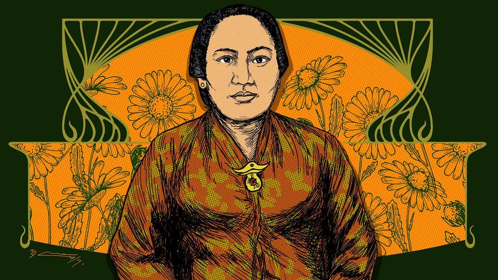

Welcome to the blog of dewi Sartika
|
Dewi Sartika
Nama : Dewi Sartika Lahir: 4 Desember 1884, Kecamatan Cicalengka Meninggal: 11 September 1947, Tasikmalaya Kebangsaan: Indonesia Suami/istri: Raden Kanduruhan Agah Suriawinata Pendidikan: Europeesche Lagere School Pasangan: R. Kd. Agah Suriawinata (m. 1906) |

|